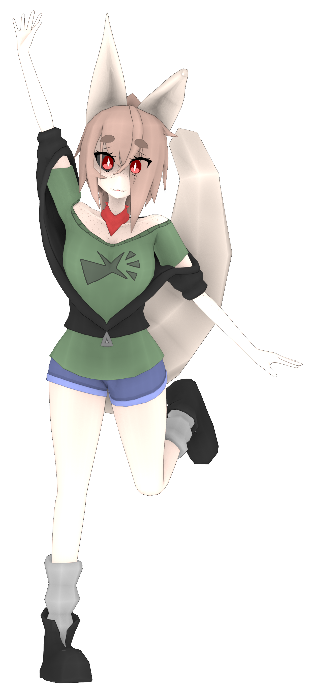
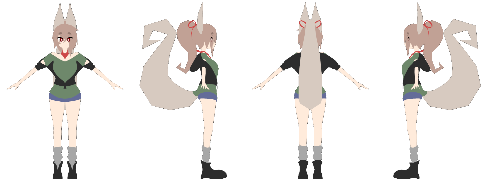

For a while I've been interested in the VTuber phenomenon. I made this model of one of my old OCs I drew when I was a teen in order to practice using Blender, with the goal of eventually becoming proficient enough to make a 3D VTuber model. It was really fun using Blender for something like this, since I hadn't done something on this scale before. I learned a lot from it too, since the way I decided to do certain parts like the face made rigging extremely difficult!
Overall though, I think my technique seemed to be effective. What I did was draw a sketch of the character from the front and then trace over it with vertices. It was then unexpectedly natural to draw it from the other angles using vertices and "extrude it out" into a 3D model. It's not perfect, and now I see a lot more flaws with it than I did back when I made it, but I'm still decently happy with it as my first proper rig.


Maybe one day I'll share some of my really old drawings. Probably not.